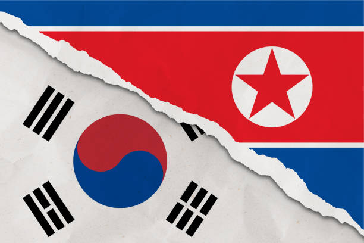
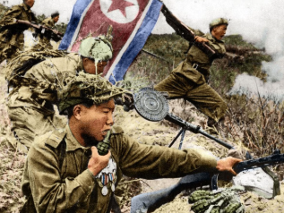
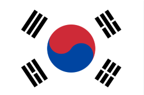

Picture of combined North Korea and South Korean flags, which were formerly
known as the Democratic People’s Republic of Korea and the Republic of Korea.

Picture of North Korean Soldiers and other forces fighting around the 38th parallel,
where lots of battles happened in 1952 during the Korean War.
Pictures of the former Democratic People’s Republic of North Korea.
Today, modern-day North Korea adopts this as their national flag.
Picture of zoomed-out Koreas (the highlighted countries), located in the very east
part of the Central region of Asia.
Picture of Korean soldiers located in the battlefield of the Koreas.

Picture of the former Republic of Korea. Today, modern-day South Korea adopts
this as their national flag.
Picture of the Soviet Union, who were a big contributor to North Korea’s
battling in the Korean War.
Picture of the Koreas, with their national flags represented.